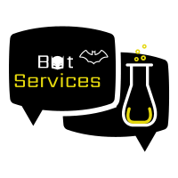

BatServices foi criada primeiramente como uma fornecedora para Wayne Enterprises.
Após isso nos dedicamos a abrir nossos horizontes , vendendo mercadoria para várias outras empresas.
BatServices busca sempre ser a melhor opção para seu cliente, fabricando produtos de autíssima qualidade e tendo o melhor preço.
Todos os produtos são sempre testados por cientístas e justiceiros capacitados, todos os modelos são feitos visando sua melhor forma.
Na Batloja você poderá comprar nossos produtos.Para receber nossas promoções, é necessário apena fazer o cadastro na página de cadastro.
Na página Batman, você poderá ver a história do homem morcego, nossa inspiração para a empresa.
No campo créditos você poderá ver as pessoas que criaram o site ou que contribuiram com o site, além das redes sociais.